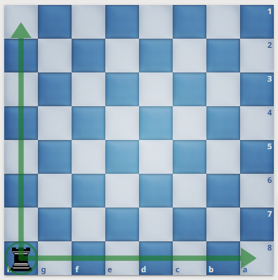

Το σκάκι είναι το δημοφιλέστερο παιχνίδι στον κόσμο! Είναι εύκολο να μάθεις τους βασικούς κανόνες του παιχνιδιού μέσα σε πολύ λίγο χρόνο!
Το σκάκι είναι ένα στρατηγικό επιτραπέζιο παιχνίδι δύο παικτών που παίζεται εδώ και αιώνες. Με την προέλευσή του που χρονολογείται από τον 6ο αιώνα,
είναι μια δοκιμασία διανοητικής ικανότητας, τακτικής κατανόησης και στρατηγικής προνοητικότητας. Παρά την πολύπλοκη φύση του, οι βασικοί κανόνες είναι
ξεκάθαροι και απλοί, καθιστώντας το ιδανικό παιχνίδι για άτομα όλων των ηλικιών και ικανοτήτων. Αυτό το άρθρο χρησιμεύει ως ένας ολοκληρωμένος οδηγός για
νέους παίκτες ώστε να μάθουν και να κατανοήσουν τους θεμελιώδεις κανόνες του σκακιού.
Μια παρτίδα σκακιού παίζεται σε ένα τετράγωνο ταμπλό (σκακιέρα) χωρισμένο σε 64 τετράγωνα εναλλασσόμενων χρωμάτων, μαύρα και άσπρα. Η σκακιέρα είναι
διατεταγμένη έτσι ώστε κάθε παίκτης να έχει ένα λευκό τετράγωνο στη δεξιά γωνία του.
Κάθε παίκτης ξεκινά το παιχνίδι με 16 κομμάτια: έναν βασιλιά, μια βασίλισσα, δύο πύργους, δύο ίππους, δύο αξιωματικούς και οκτώ πιόνια. Τα κομμάτια
είναι διατεταγμένα σε δύο σειρές. Η δεύτερη σειρά από τον παίκτη γεμίζει με πιόνια, ενώ η πρώτη σειρά στήνεται, από αριστερά προς τα δεξιά, ως εξής:
πύργος, ίππος, αξιωματικός, βασίλισσα, βασιλιάς, αξιωματικός, ίππος και πύργος. Σημειώστε ότι η βασίλισσα τοποθετείται αρχικά σε ένα τετράγωνο με το
δικό της χρώμα - λευκή βασίλισσα σε λευκό τετράγωνο και μαύρη βασίλισσα σε μαύρο τετράγωνο αντίστοιχα.
Ο βασιλιάς κινείται ένα τετράγωνο προς οποιαδήποτε κατεύθυνση - οριζόντια, κάθετα ή διαγώνια. Ο βασιλιάς έχει επίσης μια ειδική κίνηση που ονομάζεται
ροκέ, η οποία θα περιγραφεί αργότερα.
Η βασίλισσα είναι το πιο δυνατό κομμάτι. Μπορεί να μετακινηθεί σε οποιονδήποτε αριθμό τετραγώνων κατά μήκος μιας οριζοντίου, καθέτου ή διαγώνιου.
Ο πύργος μπορεί να μετακινηθεί σε οποιονδήποτε αριθμό τετραγώνων κατά μήκος μιας οριζοντίου ή καθέτου.
Ο αξιωματικός μπορεί να μετακινηθεί σε οποιονδήποτε αριθμό τετραγώνων διαγώνια.
Συγκεκριμένα, κάθε αξιωματικός ξεκινά από ένα χρώμα και πρέπει πάντα να παραμένει σε αυτό το χρώμα.
Η κίνηση του ίππου είναι μοναδική. Μετακινείται κατά δύο τετράγωνα σε μία κατεύθυνση και μετά ένα τετράγωνο κάθετο προς αυτήν την κατεύθυνση. Ο ίππος
είναι επίσης το μόνο κομμάτι που μπορεί να «πηδήξει» πάνω από άλλα κομμάτια.
Τα πιόνια κινούνται προς τα εμπρός ένα τετράγωνο, αλλά κόβουν αντίπαλα κομμάτια κατά ένα τετράγωνο διαγώνια μπροστά.
Έχουν δύο ειδικές κινήσεις - «αν πασάν» και προαγωγή, που θα συζητηθούν αργότερα.
Αυτή είναι μια κίνηση που περιλαμβάνει τον βασιλιά και έναν από τους δύο πύργους. Ο βασιλιάς μετακινείται δύο τετράγωνα προς τον πύργο και ο πύργος
στη συνέχεια μετακινείται στο τετράγωνο που ο βασιλιάς πέρασε.
Ωστόσο, πρέπει να πληρούνται αρκετές προϋποθέσεις για να συμβεί το ροκέ:
Κανένα από τα δύο κομμάτια που συμμετέχουν στο ροκέ δεν μπορεί να έχει μετακινηθεί πριν.
Δεν πρέπει να υπάρχουν κομμάτια μεταξύ του βασιλιά και του πύργου.
Ο βασιλιάς δεν μπορεί να είναι υπό απειλή σαχ, ούτε να περάσει ή να πάει σε τετράγωνο που απειλείται.
Εάν ένα πιόνι φτάσει στο αντίθετο άκρο της σκακιέρας, προάγεται και πρέπει να ανταλλάσσεται με βασίλισσα, πύργο, αξιωματικό ή ίππο του ίδιου χρώματος.
Φυσικά, σχεδόν πάντα το καλύτερο είναι να προαχθεί σε βασίλισσα που έχει και τη μεγαλύτερη αξία μετά τον βασιλιά.
Αυτή είναι μια μοναδική κίνηση κοψίματος που γίνεται από πιόνι. Μπορεί να συμβεί όταν ένας παίκτης μετακινεί ένα πιόνι δύο τετράγωνα μπροστά από την
αρχική του θέση και σταματά δίπλα από πιόνι ενός αντιπάλου. Ο αντίπαλος έχει την ευκαιρία τότε αν θέλει να κόψει το πιόνι του αντιπάλου σαν να είχε
μετακινηθεί μόνο ένα τετράγωνο μπροστά.
Ο στόχος του παιχνιδιού είναι να απειλήσει τον αντίπαλο βασιλιά με «ματ», μια θέση όπου ο βασιλιάς βρίσκεται σε κατάσταση απειλής (σαχ) και δεν
υπάρχει νόμιμη κίνηση για να τον απομακρύνει από την αντίπαλη επίθεση.
Το «σαχ» είναι μια έκφραση που χρησιμοποιείται στο σκάκι για να υποδείξει ότι ο βασιλιάς του αντιπάλου είναι σε απειλή, αλλά μπορεί να την αντιμετωπίσει.
Προέρχεται από την περσική λέξη "shah", που σημαίνει "βασιλιάς".
Το «πατ» είναι μια κατάσταση στην οποία ένας παίκτης δεν μπορεί να κάνει μια νόμιμη κίνηση, αλλά ο βασιλιάς του δεν είναι υπό απειλή. Σε αυτή την
περίπτωση, το παιχνίδι λήγει με ισοπαλία.
Στο σκάκι, η αξία των κομματιών μπορεί να μετρηθεί σε βαθμούς, παρόλο που αυτή η αξία είναι σχετική και μπορεί να διαφέρει ανάλογα με τη συγκεκριμένη
θέση της παρτίδας. Οι συνήθεις αξίες που συνδέονται με τα κομμάτια είναι οι εξής:
| Κομμάτι | Βαθμός |
|---|---|
| Πιόνι | 1 βαθμός |
| Ίππος | 3 βαθμοί |
| Αξιωματικός | 3 βαθμοί |
| Πύργος | 5 βαθμοί |
| Βασίλισσα | 9 βαθμοί |
| Βασιλιάς | Άπειρη αξία |
Αυτές οι αξίες αντιπροσωπεύουν μια γενική εκτίμηση της σημασίας των κομματιών κατά τη διάρκεια του παιχνιδιού. Ωστόσο, είναι σημαντικό να σημειωθεί
ότι η αξία ενός κομματιού μπορεί να αλλάξει ανάλογα με τη θέση και την κατάσταση της παρτίδας. Παρόλο που οι παραπάνω αξίες είναι συνήθεις, οι παίκτες
μπορούν να έχουν διαφορετικές προσεγγίσεις και να δίνουν ελαφρώς διαφορετική σημασία στα κομμάτια, ανάλογα με το προσωπικό τους στιλ και προτιμήσεις.
Επίσης, οι αξίες μπορεί να αλλάξουν σε διάφορες φάσεις του παιχνιδιού, όπως στην αρχή, το μέσο παιχνίδι και το τέλος του παιχνιδιού.
Συνολικά, οι αξίες των κομματιών στο σκάκι παρέχουν μια γενική κατεύθυνση για την αξιολόγηση των πιθανοτήτων και των πλεονεκτημάτων κατά τη διάρκεια
μιας παρτίδας. Ωστόσο, η πραγματική αξία των κομματιών εξαρτάται από την θέση και τη συνεργασία τους στη σκακιέρα.
Τέλος, η κατανόηση του σκακιού σημαίνει επίσης να εκτιμάς την εθιμοτυπία του. Πάντα να δίνετε τα χέρια με τον αντίπαλο με χειραψία πριν και μετά το
παιχνίδι. Εάν πιάσετε ένα κομμάτι, πρέπει να το μετακινήσετε (κανόνας αγγίγματος-μετακίνησης). Το παιχνίδι πρέπει πάντα να παίζεται με πνεύμα δίκαιου
παιχνιδιού και αμοιβαίου σεβασμού.